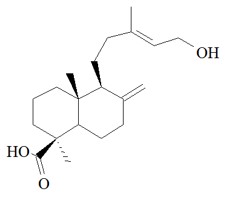

Pricing
| Isocupressic Acid - 50 mg | $600.00 |
|---|---|
| Isocupressic Acid - 100 mg | $1,000.00 |
| Isocupressic Acid - 500 mg | $3,500.00 |
Physical Characteristics
- Purity: Greater than 97%
- Molecular Weight: 320 g/mol
- Molecular Formula: C20H32O3
Note: All products are intended for research use only, Customer assumes all responsibility for misuse or mishandling of products.
Isocupressic Acid

Isocupressic Acid
Solubility
Isocupressic Acid is freely soluble in methylene chloride, chloroform; partially soluble in ethanol and ethylacetate.References
1. Garrossian, M. et al. Preparation of tetrahydroagathic acid a serum metabolite of isocupressic acid J. Agricultural Food Chemistry 50, 2235-2240, 2002.
2. Title: NATURAL PRODUCTS WITH POTENTIAL PHARMACEUTICAL VALUES (CYCLOPAMIN, SWAINSONINE, ISOCUPRECIC ACID)
Type: SPEECH
Author(s): GARROSSIAN MASSOUD,GARDNER DALE
Name of Seminar: NATIONAL CONGRESS ON MEDICINAL PLANTS
Type of Seminar: CONGRESS
Sponsor: NATIONAL NETWORK OF RESEARCH AND TECHNOLOGY OF MEDICINAL PLANTS
Date: 2013, Volume 2
Abstract:
A-CYCLOPAMINE AND CANCER:
MISREGULATION OF HH SIGNALING HAS BEEN SHOWN TO CAUSE TUMORS, INCLUDING BASEL- CELL CARCINOMA, MEDULLOBLASTOMA, SMALL-CELL LUNG CANCER, PANCREATIC ADENOCARCINOMA, AND SOME PROSTATIC CANCER, ALSO HH SIGNALING HAS BEEN SHOWN TO BE IMPORTANT IN THE MAINTENANCE OF BREAST, BRAIN AND COLORECTAL CANCER...